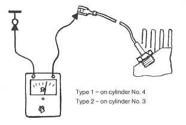

Resistance of temperature sensor in cylinder head too high
- Run engine until oil temperature is above 80 degrees C (176 degrees F)
- Pull wire off temperature sensor
- Connect ohmmeter
Resistance should be less than 300 ohm

Resistance is correct Resistance is well above specified value